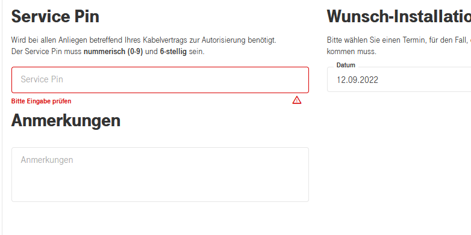

Hallo an alle,
Ich bin gerade in meine neue Mietwohnung eingezogen und versuche nun den Gigakraft 100 Tarif abzuschließen. Auf der Seite "Meine Daten" werde ich nach einem "Service PIN des Kabelvertrags" gefragt, der 6 stellig und numerisch sein soll. Ich habe allerdings keine Ahnung was damit gemeint ist.
Kann mir jemand weiterhelfen?

Beste Grüße
Hallo @Loutr und willkommen in der Magenta Community
Bestellst du zu deinem Internetvertrag auch TV dazu? Wenn ja,ist dieser PIN möglicherweise für den Jugendschutz zur Deaktivierung gedacht.
LG
Rexalius
Hallo @Loutr ,
der Service-Pin ist nichts anderes als das Kundenkennwort bei einem Mobilvertrag. Bei vertraglichen Änderungen brauchst du nur deine Kundennummer und die PIN angeben und hast sozusagen Vollzugriff :-). Hier, bei deinem Screenshot oben, legst du den PIN erstmalig fest.
LG JD.